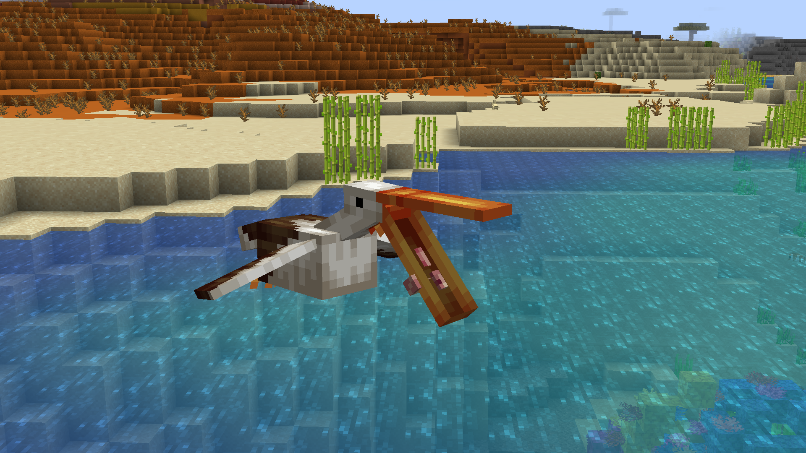
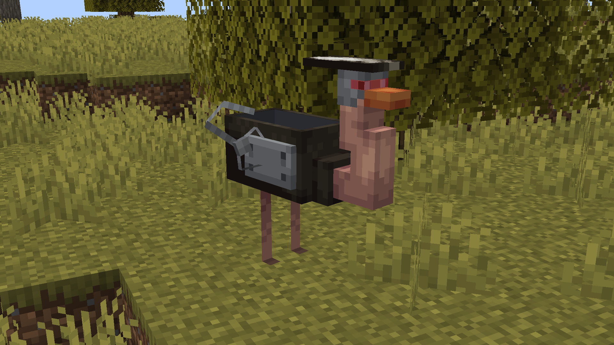

Mods
Note: Mods may not be optimized or checked for compatibility.
Feel free to include my mods in your modpacks, however, I would not recommend it.
All my mods are for Fabric. Please do not ask for a Forge port.
Angling [Adding Too Many Fish to Minecraft]
Download on Modrinth
Requires GeckoLib and Fabric API.


Ruined Minecraft Live Mobs
Download for Minecraft 1.19
Requires GeckoLib and Fabric API.
Illegal Building Techniques
Download for Minecraft 1.19.2
Requires Fabric API.
Worse Wild Update
Download for Minecraft 1.18.2
Requires GeckoLib and Fabric API.

